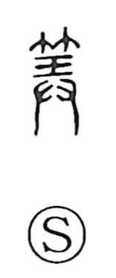

算

Uncategorized
Kun: soro | On: san
to calculate ・ to count ・ calculation ・ strategy
Explanation
The character joins 竹, bamboo, with 具, originally a picture of both hands presenting a bronze tripod vessel (ding) in offering, which later came to mean an implement or utensil. Here 具 contributes the idea of a tool. The graph evokes making slender counting rods from bamboo, setting them in rows and tallying with them; hence the senses “to count” and, by extension from computation, “plan” or “strategy.” A related form 筭, written with 竹 and 弄, was used specifically for the bamboo counting rods themselves.